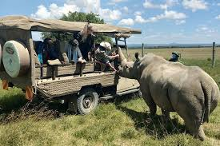
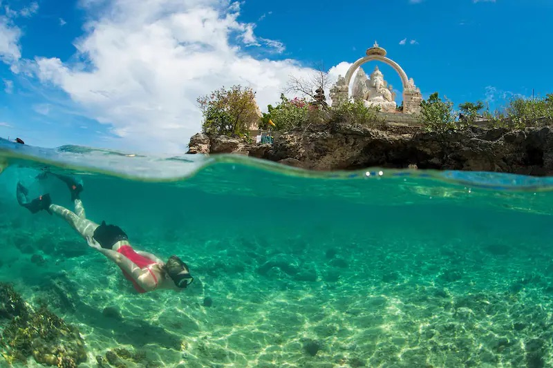
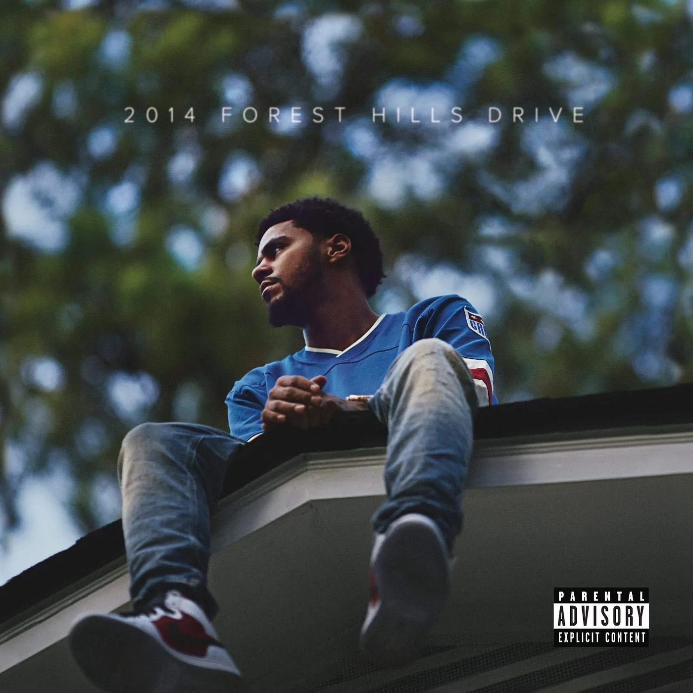
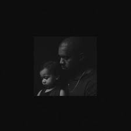

My Ultralight Format Ideas
1. Daily Color Rhymes
Guide
- Once a day, select a random color of your choosing
- Start by noting down the phrase, Today I choose the color, ... and fill in your chosen color
- Add another line describing something that happened in your day, ensuring the last word rhymes with the color you chose
- Reflect on these rhymes every week to evaluate how your week's been.
Feel free to use a color more than once but the second line has to be unique to the day
Examples
- Today I choose the color blue, I am afraid I might have caught the flu.
- Today I choose the color red, Without office hours I'll fail, I dread.
2. Vacation Destinations
Guide
- Once a day, pick a random vacation destination and upload a picture of it.
- List two reasons why you think it is a good place to spend a vacation.
- At the end of each week, pick your best location.
- Now you have a comprehensive list of potential vacation destinations.
Examples
-

Day 1: Kenya
- Safaris at Maasai Mara National Park.
- White sandy beaches at Diani.
-

Day 2: Fiji.
- Snorkelling near the beaches of Menjangan island.
- Surfing in Uluwatu and Canggu beach.
Week 1 Selection: Kenya.
3. Best Bars
Guide
- Select one song of your choosing each day.
- Upload the spotify cover image and note down the artist's name(s)
- Also note down the lyric that you like/ resonate most from the track
Examples
-

J. Cole - Love Yourz
"It's the beauty in the struggle, ugliness in the success"
-

Ye - Only One
"No, you're not perfect but you're not your mistakes"
References